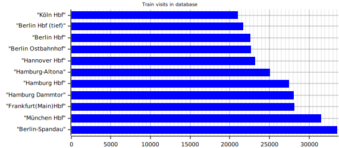

Installation
Dependencies
This program depends on:
- A running Postgresql server on
postgres://postgres@localhost/db-statistics
Tested with Postgresql 13 - Rust stable
- A working internet connection
Quick starter guide
Disclaimer: Most of this guide only works on Linux, you may refer to the Postgresql documentation and the Rust website for more information on other systems.
- Firstly, you have to install postgresql:
- Install the database package on your system:
- Arch:
sudo pacman -S postgresql - Debain & Ubuntu:
sudo apt install postgresql - Other: Postgresql install guide
- Arch:
- Then, login into the newly created user:
sudo su postgres. - Create a new database cluster using
initdb -D directory/to/store/data. - Start the Postgresql server (usually
sudo systemctl start postgresql). - Create a new database in the cluster named db-statistics in the cluster:
createdb db-statistics.
- Install the database package on your system:
- Compile the project:
- Install the rustup package:
- Arch:
sudo pacman -S rustup - Debial & Ubuntu:
sudo apt install rustup - Other: Rustup install guide
- Arch:
- Run
rustup install stablein your terminal. - Run
cargo build --releasein the hafas-rs folder. This should create a folder namedtarget/releasethat contains an executable nameddatabase-cli. Congratulations, you just successfully compiled the project!
- Install the rustup package:
- Then use
database-cli migrateto check the connection to the local database and create neccessary infrastructure like schemas, tables and functions. - Use
database-cli data request_raw --parseTo request data and parse it into the database. This will take a while for all ~1.5 Million entries to be fetched. I recommend running this command over night and at other times the system is not under heavy load. - You are ready to play with the data in your favourite SQL prompt! See the HAFAS Section for more information on the database structure.
(Optional)
-
Use
database-cli data parse_heatmapto parse trip's eva counts into a lighter format. -
Use
database-cli create_heatmap -m 10to get a diagram of the 10 most used stations.After following these steps, the program should create an image named
heatmap.svgin the current folder. Here is an example for it: 